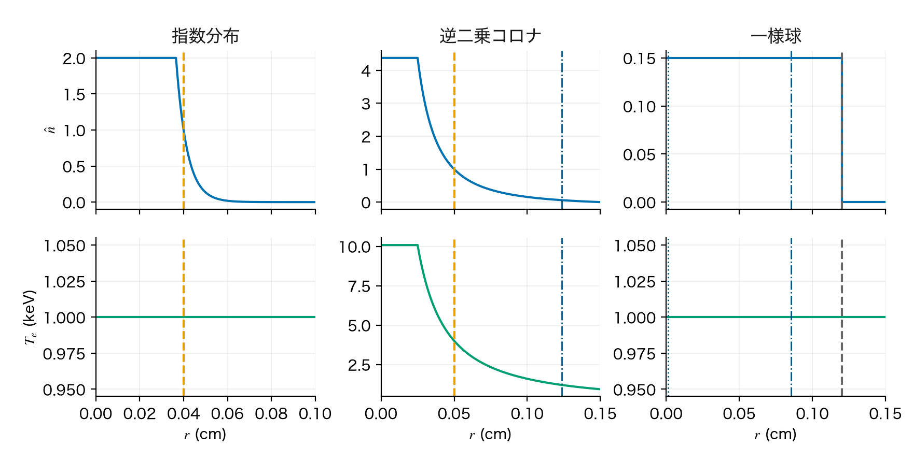
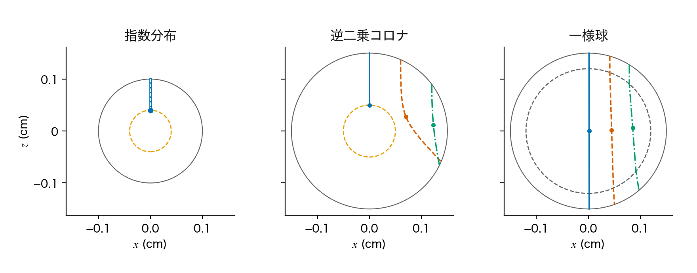
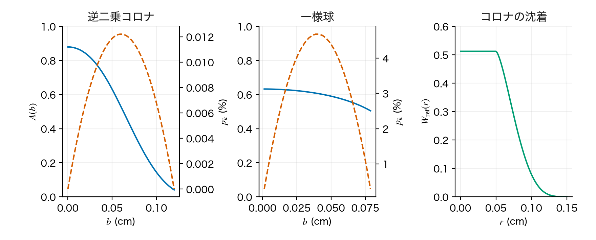
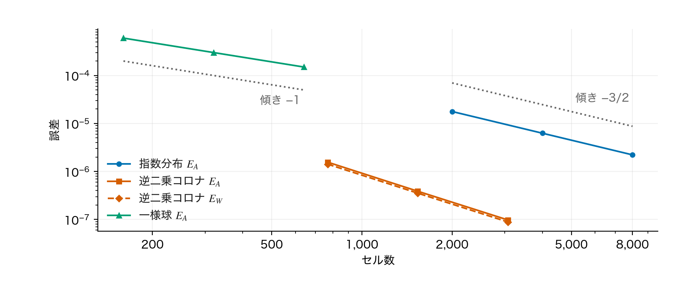

レーザー光線追跡の解析解による検証 reference
要旨
球対称の 3 問題で、逆制動輻射（inverse bremsstrahlung）による吸収を含む一次元のレーザー光線追跡を検証した。指数密度分布、逆二乗コロナ、一様な亜臨界球のビーム吸収率を解析解と比較した。コロナでは沈着エネルギーの半径方向分布も比較した。4 組の収束判定はすべて合格した。観測収束次数（observed order of convergence）は、指数分布で約 1.5、コロナで約 2、一様球で約 1 である。
はじめに
特性曲線積分（characteristic integration）は球対称プラズマ中の光線を追跡し、経路に沿って衝突吸収を積算する。指数分布の試験では、臨界面で反射する光線の吸収を調べる。コロナでは光線ごとに異なる半径で転回する。一様球では密度段差で屈折し、吸収の起こる弦の長さが変わる。
指数分布の吸収積分 [2、p. 129、式 (4.84)–(4.88)]、逆二乗コロナ中の光線 [3、p. 12、式 (19)–(21)]、一様な亜臨界プラズマでの減衰 [4、p. 4] を出発点とする。以下に示す分布と収束判定は TENRYU の試験で用いるものである。
計算の設定
半径を \(r\)、電子密度をレーザー振動数での臨界密度で割った値を \(\hat n\)、電子温度を \(T_e\) とする。臨界半径 \(r_1\) は密度比が 1 になる位置である。衝突径数（impact parameter）\(b\) は、標的中心から真空中の入射光線を延長した直線までの距離である。光線が中心に最も近づく位置の半径を転回半径（turning radius）と呼ぶ。全光学的厚さ（optical depth）\(\tau\) はプラズマ内の往路と復路を合わせた値である。対応する光線の吸収率 \(A(b)\) は入射エネルギーに対する割合である。
| 項目 | 値 |
|---|---|
| 幾何と格子 | 1D_SPH。中心から外端面まで半径方向に等間隔のセル |
| レーザー | 波長 351 nm の 1 ビーム。−z 方向にパワー 107 erg/s で照射 |
| 追跡 | raytrace_2d モードの特性曲線積分。臨界面で吸収して追跡を打ち切る設定は無効 |
| プラズマと時間 | 固定電離度 1 の水素。電子温度とイオン温度は等しい。流体・熱伝導・輻射を無効にし、10−13 s のレーザー計算を 1 回行う。 |
| 吸収のクロージャ | マクスウェル分布の吸収。指数分布とコロナではクーロン対数を 7 に固定する。一様球では既定のクーロン対数を用いる。 |
| 問題 | 密度と領域 | \(T_e\) | ビーム | 中心光線の \(\tau\) / 吸収率 | ビームの \(f_{\rm ref}\) | セル数 / 光線数 |
|---|---|---|---|---|---|---|
| 垂直入射の指数密度分布 | 外半径 0.10 cm、指数分布の尺度長 0.005 cm、臨界半径 0.04 cm。内側の密度の上限は臨界密度の 2 倍。 | 1 keV | 開き角が小さく、垂直入射に近いガウス形ビーム | 2.589101 / 0.924912 | 0.92491245592 | 2,000 / 16 4,000 / 16 8,000 / 16 |
| 平行ビームを入射する逆二乗コロナ | 外半径 0.15 cm、臨界半径 0.05 cm。定数項を引いた逆二乗分布で、0.025 cm より内側は一定。 | 臨界半径で 4 keV | 0.12 cm で強度が 0 になるまで線形に減少する平行ビーム | 2.115665 / 0.879447 | 0.51240892085 0.51240892098 0.51240892101 | 768 / 12,288 1,536 / 24,576 3,072 / 49,152 |
| 密度段差をもつ一様な亜臨界球 | 外半径 0.15 cm。0.12 cm までの密度は臨界密度の 0.15 倍、外側では 10−12 倍。 | 1 keV | 0.08 cm で強度が 0 になるまで線形に減少する平行ビーム | 1.000929 / 0.632462 | 0.59915946355 0.59917164268 0.59917469630 | 160 / 32 320 / 64 640 / 128 |

解析解
逆制動輻射の吸収係数は Johnston と Dawson [1、p. 722、式 (1a)] に従う。収束試験では水素を用いる。
$$ \begin{aligned} n_c &= \frac{m_e\omega^2}{4\pi e^2},\qquad \omega=\frac{2\pi c}{\lambda},\\ K(T_e,\ell) &= \frac{4\sqrt{2\pi}}{3}\, \frac{e^4 n_c\ell}{c\sqrt{m_e}\,\theta_e^{3/2}},\qquad \kappa(r)=K(T_e(r),\ell)\frac{\hat n(r)^2}{\sqrt{1-\hat n(r)}} . \end{aligned} $$\(n_c\) は臨界電子密度、\(\omega\) は角振動数、\(\lambda\) は真空波長、\(e\) は静電単位での電気素量、\(m_e\) は電子質量、\(c\) は光速である。\(\ell\) はクーロン対数、\(\theta_e\) は電子温度を eV から erg に換算した値である。\(K\) は温度とクーロン対数で決まる係数、\(\kappa\) は臨界密度未満の領域での光線に沿う吸収係数（cm−1）である。
$$ \begin{aligned} b&=r\sqrt{1-\hat n(r)}\sin\psi,\qquad Q(r;b)=r^2[1-\hat n(r)]-b^2,\\ \tau(b)&=2\int_{r_t}^{R}\frac{K(T_e(r),\ell)\hat n(r)^2r}{\sqrt{Q(r;b)}}\,\mathrm dr, \qquad A(b)=1-e^{-\tau(b)} . \end{aligned} $$第 1 式は Bouguer の不変量である。\(\psi\) は光線と半径方向がなす角、\(\sqrt{1-\hat n}\) は屈折率である。\(Q\) は滑らかな分布の転回半径 \(r_t\) で 0 になる径方向の因子であり、\(R\) は外半径である。復路では経路長の微分と半径の微分の関係が \(\mathrm ds=r\sqrt{1-\hat n}\,\mathrm dr/\sqrt{Q}\) となる。この関係から半径についての積分を得る。往路と復路の光学的厚さは等しい。減衰則の指数関数は、経路全体を通過して残るエネルギーの割合を与える。
垂直入射の指数密度分布
$$ \begin{aligned} E(r)&=e^{-(r-r_1)/L},\qquad x=(R-r_1)/L,\qquad \epsilon=e^{-x},\\ \hat n(r)&=\min\!\left(2,\frac{E(r)-\epsilon}{1-\epsilon}\right), \qquad u=\sqrt{1-\epsilon},\\ \Phi&=-\tfrac23u(2+\epsilon)+4\epsilon u+ \epsilon^2[-x-2\ln(1+u)],\\ \tau(0)&=-\frac{2K(1000\,\mathrm{eV},7)L\Phi}{(1-\epsilon)^{3/2}} . \end{aligned} $$指数関数 \(E(r)\) の尺度長は \(L\) である。定数項 \(\epsilon\) を引くと外半径で密度が 0 になる。\(x\) は臨界半径から外半径までの距離を \(L\) で割った値、\(u\) は \(\sqrt{1-E(r)}\) を外端面で評価した値である。\(\Phi\) は原始関数の外端面での値で、臨界半径での値は 0 である。垂直入射では光線が臨界半径まで半径方向に進み、同じ経路を戻る。\(\epsilon\) を 0 に近づけると、定数項を引かない Michel の指数分布の式 [2、式 (4.88)] に近づく。
平行ビームを入射する逆二乗コロナ
$$ \begin{aligned} \hat n(r)&=s[(R/r)^2-1],\qquad T_e(r)=T_c(r_1/r)^{4/3},\\ r_t^2&=\frac{sR^2+b^2}{1+s},\qquad C_0=\frac{K(T_c,7)s^2}{\sqrt{1+s}\,r_1^2},\qquad w=\frac{\sqrt{(R-r_t)(R+r_t)}}{R},\\ \tau(b)&=2C_0 R^3\!\left[\frac{\arcsin w}{\sqrt{(1-w)(1+w)}}-w-\tfrac23w^3\right]. \end{aligned} $$分布の形を定める \(s\) は 1/8、臨界半径での温度 \(T_c\) は 4 keV である。0.025 cm より内側では、密度比と温度を 0.025 cm での値に固定する。転回点はすべて 0.025 cm より外側にある。係数 \(C_0\) は光線に沿って一定で、\(w\) は外端面での平方根を \(R\) で割った値である。定数項を引いた密度分布と温度分布から、この試験の閉じた形の解が得られる。
密度段差をもつ一様な亜臨界球
$$ a=\frac b{\sqrt{1-n_0}},\qquad \kappa_0=K(1000\,\mathrm{eV},\ell)\frac{n_0^2}{\sqrt{1-n_0}},\qquad \tau(b)=2\kappa_0\sqrt{(R_u-a)(R_u+a)} . $$参照解では希薄な外層の吸収を無視する。球の表面 \(R_u\) で Snell の法則（Snell's law）に従って屈折する際、Bouguer の不変量は保存される。光線は球内を最小半径 \(a\) の直線の弦に沿って進む。密度比 \(n_0\) は 0.15、\(\kappa_0\) は球内の一定の吸収係数である。光線はすべて球と交わる。
$$ \begin{aligned} x_s&=(2n_0)^{-1},\qquad g(y)=e^y\left[-\gamma-\ln y-\sum_{m=1}^{60}\frac{(-y)^m}{m\,m!}\right],\\ B&=\ln\frac{4\theta_e}{\hbar\omega}-\gamma+\tfrac12 g(x_s)-g(x_s/2), \qquad \ell=B+\tfrac12\ln(1+e^{-2B}) . \end{aligned} $$試験は球の温度での Born 項 \(B\) からクーロン対数を求める。この温度では古典補正は 0 である。\(\hbar\) は換算 Planck 定数、\(\gamma\) は Euler 定数である。\(x_s\) は球内の密度で決まる。試験は引数 \(y\) の指数積分に \(e^y\) を掛けた \(g\) を、添字 \(m\) について 60 項の級数で評価する。記録されたクーロン対数は 6.160313448090 である。

ビームの吸収率と沈着分布
$$ b_k=(k+\tfrac12)\frac{b_{\max}}{N},\quad p_k=\frac{(1-b_k/b_{\max})b_k}{\sum_j(1-b_j/b_{\max})b_j},\quad f_{\rm ref}=\sum_{k=0}^{N-1}p_k A(b_k) . $$平行ビームの光線数を \(N\) とし、打ち出し面の円環を 0 から \(N-1\) までの添字 \(k\)、\(j\) で表す。\(b_k\)、\(b_j\) は各円環の幅の中央の衝突径数である。強度はビーム半径 \(b_{\max}\) で 0 になり、重み \(p_k\) は円環の面積因子を含む入射エネルギーの割合である。光線の重み付き和の例は文献 [5、p. 231、式 (51)–(52)] と [6、p. 10、式 (A1)–(A2)] にある。コロナと一様球では試験と同じ光線で参照値 \(f_{\rm ref}\) を求め、連続ビームを有限本の光線で表す誤差を比較から除く。指数分布の参照値には垂直入射の解 \(1-e^{-2T(r_1)}\) を用いる。\(T(r_1)\) は臨界半径までの片道の光学的厚さである。試験ビームの有限の開き角と希薄な外層によるずれに対し、9.7 × 10−12 のモデル誤差の上限を置く。
$$ \begin{aligned} u_r&=\sqrt{(r-r_t)(r+r_t)},\\ D(r)&=C_0\left[\frac{R^4}{r_t}\arcsin\frac{u_r}{r} -2R^2u_r+\frac{(r^2+2r_t^2)u_r}{3}\right] && (r>r_t),\\ T_t&=\tau(b)/2,\qquad W_k(r)=A(b_k)-2e^{-T_t}\sinh D(r),\qquad W_{\rm ref}(r)=\sum_k p_k W_k(r) . \end{aligned} $$コロナでは \(u_r\) は上式で定義した光線ごとの平方根、\(D(r)\) は転回点から半径 \(r\) の球面までの片道の光学的厚さである。転回点とその内側では \(D(r)\) を 0 とする。\(T_t\) はその光線の領域外端から転回点までの片道の光学的厚さである。光線 k の沈着率を求めるときは、同じ光線に対する光学的厚さを用いる。\(W_k(r)\) は光線 \(k\) の入射エネルギーのうち、往復で球面の外側に沈着する割合である。重み付き和 \(W_{\rm ref}(r)\) はビーム全体に対する割合である。

比べる量と判定
$$ \begin{aligned} E_A&=\left|\frac{\sum_i D_i}{E_{\rm in}}-f_{\rm ref}\right|,\\ E_W&=\frac{1}{768}\sum_{J=1}^{767} \left|\frac{\sum_{i\ \mathrm{outside}\ r_J} D_i}{E_{\rm in}}-W_{\rm ref}(r_J)\right|, \qquad r_J=\frac{JR}{768}. \end{aligned} $$セル \(i\) の沈着エネルギーを \(D_i\)、指定された入射エネルギーを \(E_{\rm in}\) とする。3 問題とも \(E_A\) を計算する。コロナでは \(E_W\) も計算し、最粗格子の 767 個の内部セル面より外側の累積沈着を比較する。面の添字 \(J\) はどの格子でも同じ半径 \(r_J\) を指す。
$$ p_1=\log_2(E_1/E_2),\qquad p_2=\log_2(E_2/E_3), \qquad p_{\min}=0.9\,p_{\rm claim} . $$粗・中間・細格子の誤差を \(E_1\)、\(E_2\)、\(E_3\) とする。観測収束次数 \(p_1,p_2\) は、セル幅が 2 倍異なる隣接した格子の組から求める。指数分布とコロナの 2 つの指標に対する想定次数 \(p_{\rm claim}\) は 3/2 である。光学的厚さは転回点に平方根分岐（square-root branch）をもつため、再構成した傾きと転回半径の誤差が 3/2 次で効く。一様球の想定次数は 1 である。再構成した密度は隣接するセルの中心間で半径について線形であり、等間隔格子のセル境界では両セルの平均値をとる。この再構成により、密度段差はセル 1 個分の幅に広がる。合格の下限 \(p_{\min}\) はそれぞれ 1.35 と 0.9 である。
丸め誤差に対する下限 \(F\) は 10−10 である。数値積分の誤差推定値 \(\sigma\) は、光学的厚さの積分誤差の推定値を光線ごとに足し、その最大を取った値である。判定には指数分布のモデル誤差の上限を各格子で用い、他の 2 問題では 0 とする。下表の順で判定する。隣接格子から求めた 2 つの次数には片側の下限を課す [7、PDF pp. 34–35]。特異点による次数の低下と、格子収束性の評価における 10% の幅は文献 [8、p. 182 および p. 326、表 8.1] に記載されている。
| 順序 | 条件 | 判定 |
|---|---|---|
| 1 | 3 格子すべての誤差が丸め誤差の下限以下。 | PASS floor |
| 2 | いずれかの誤差が丸め誤差の下限の 100 倍未満。 | BLOCKED rounding_ |
| 3 | 粗格子から順に、各格子で積分誤差の推定値、モデル誤差の上限の順に調べる。最初にその格子の測定誤差の 1% を超えた項目、または積分誤差の推定値が非数（NaN）だった場合の判定を用いる。 | BLOCKED iterative_BLOCKED model_ |
| 4 | いずれかの次数が 0 以下。 | FAIL order_ |
| 5 | 両方の次数が合格の下限以上。 | PASS |
| 6 | 両方の次数が合格の下限未満。 | FAIL order_ |
| 7 | 一方の次数が合格の下限以上で、もう一方が下限未満。 | BLOCKED order_ |
FAIL と BLOCKED はどちらも検査の失敗となる。各実行ではエネルギー保存の節に示す台帳と 3 種のエラーフラグも検査する。
結果
記録した試験は 2026 年 11 月 25 日 10:50（日本標準時）に NVIDIA RTX PRO 6000 Blackwell Max-Q GPU 1 枚で実行した。実行条件と印字出力は、リポジトリの tools/site_figures/ にある。
unresolved_quadrature は、積分区間の分割深さまたは分割数の上限で受理された光線区間の数である。これらの区間の誤差推定値も \(\sigma\) に含まれる。区間数そのものには 0 の条件を課さない。
| 問題 | セル数 | \(E_A\) | \(E_W\) | \(\sigma\) | 台帳 | 上限到達区間数 |
|---|---|---|---|---|---|---|
| 垂直入射の指数密度分布 | 2,000 | 1.77621 × 10−5 | — | 1.66850 × 10−13 | 2.06734 × 10−15 | 0 |
| 垂直入射の指数密度分布 | 4,000 | 6.27867 × 10−6 | — | 1.31722 × 10−13 | 5.13199 × 10−15 | 0 |
| 垂直入射の指数密度分布 | 8,000 | 2.21966 × 10−6 | — | 9.77181 × 10−14 | 7.24630 × 10−15 | 0 |
| 平行ビームを入射する逆二乗コロナ | 768 | 1.56782 × 10−6 | 1.42371 × 10−6 | 5.46515 × 10−9 | 9.81186 × 10−15 | 52 |
| 平行ビームを入射する逆二乗コロナ | 1,536 | 3.88042 × 10−7 | 3.53648 × 10−7 | 7.38890 × 10−10 | 1.00621 × 10−13 | 42 |
| 平行ビームを入射する逆二乗コロナ | 3,072 | 9.77084 × 10−8 | 8.87076 × 10−8 | 9.45680 × 10−11 | 8.93012 × 10−14 | 42 |
| 密度段差をもつ一様な亜臨界球 | 160 | 6.01148 × 10−4 | — | 9.53623 × 10−14 | 8.45017 × 10−17 | 0 |
| 密度段差をもつ一様な亜臨界球 | 320 | 3.00357 × 10−4 | — | 4.76115 × 10−14 | 9.84603 × 10−17 | 0 |
| 密度段差をもつ一様な亜臨界球 | 640 | 1.50128 × 10−4 | — | 3.01618 × 10−14 | 1.11928 × 10−17 | 0 |
収束
| 問題 | 比較量 | 粗から中間 | 中間から細 | 下限 | 判定 |
|---|---|---|---|---|---|
| 垂直入射の指数密度分布 | \(E_A\) | 1.500269 | 1.500119 | 1.35 | PASS |
| 平行ビームを入射する逆二乗コロナ | \(E_A\) | 2.014475 | 1.989656 | 1.35 | PASS |
| 平行ビームを入射する逆二乗コロナ | \(E_W\) | 2.009271 | 1.995185 | 1.35 | PASS |
| 密度段差をもつ一様な亜臨界球 | \(E_A\) | 1.001042 | 1.000486 | 0.90 | PASS |
コロナの 2 つの指標はいずれも約 2 次で収束し、片側の合格下限 1.35 を上回った。臨界半径から最外側の光線の転回半径までの範囲に全体が含まれる各セルで、少なくとも 16 本の光線が転回する。隣り合う光線の転回半径の差は、衝突径数の間隔を \(\Delta b=0.8h/16\)、セル幅を \(h\) として、最大 \(\Delta b/\sqrt{1+s}\) である。収束次数が想定より高くなった理由は、この試験では調べていない。

エネルギー保存と再現性
$$ \epsilon_{\rm ledger}=\frac{|E_{\rm in}-\sum_i D_i-\Delta t P_{\rm unabs}|}{E_{\rm in}} . $$エネルギー台帳（energy ledger）の規格化残差 \(\epsilon_{\rm ledger}\) は、指定された入射エネルギーと、沈着エネルギーおよび吸収されずに出ていくエネルギーの和を比べる。\(\Delta t\) はレーザー計算の時間幅、\(P_{\rm unabs}\) は吸収されずに出ていくパワーである。残差の上限は 10−10 である。光線のステップ数の上限到達、非数（NaN, not-a-number）の発生、無効セルの参照はいずれも 0 件を要求する。記録した実行はこれら 4 条件を満たした。
各収束問題の最粗格子を同じプロセス内で再実行し、セル別沈着エネルギーの配列をバイト単位で比較した。3 問題とも初回と再実行の配列はビット単位で一致した。
吸収のクロージャの検査
Langdon 因子の検査では、コロナの最粗格子を使い、温度分布を標準のコロナの 36 倍にする。参照解では各球殻の往復通過時間を解析軌跡から求め、光線ごとの入射パワーで重み付けして足す。この和を球殻の体積で割ると、レーザーのエネルギー密度の参照値になる。さらに球殻の中点での電子温度で割り、換算係数を掛けて Langdon パラメータを得る。ビームのパワーは、その最大値が 0.5 になるように選ぶ。参照解では、得られた Langdon 因子を球殻ごとに光学的厚さの解析値の増分に掛ける。数値計算では cell_energy_density を用い、ビームの吸収率と累積沈着率を参照解と比較する。
\(\alpha\) は球殻の Langdon パラメータ、\(L(\alpha)\) は吸収に掛ける因子である。吸収誤差と沈着誤差をそれぞれ Langdon 因子を用いたビーム吸収率の参照値 \(f_{\rm ref}\) で割った値は 0.01 以下を要求する。測定値はそれぞれ 2.97804 × 10−4 と 1.42876 × 10−4 だった。
炭素・水素の検査では指数分布の最細格子を使い、炭素と水素を等しい個数分率で混ぜ、電離度をそれぞれ 6 と 1 に固定する。実効電離度（effective ion charge）\(Z_{\rm eff}\) は個数分率で重み付けした電離度の二次モーメントと一次モーメントの比で、37/7 となる。元素組成から実効電離度を求める設定を有効にし、温度を (37/7)2/3 倍にする。すると \(Z_{\rm eff}\) を温度の 3/2 乗で割った値が水素の場合と等しくなり、温度と実効電離度で決まる吸収係数の因子が一致する。吸収率を元の指数分布の参照値と比較した絶対誤差は 2.21966 × 10−6 で、許容値は 0.01 である。クロージャの検査は 2 件とも合格した。
限界
収束試験の範囲は、プラズマの分布を指定した 1D_SPH の特性曲線積分とマクスウェル分布の吸収である。Langdon 因子と \(Z_{\rm eff}\) の検査はそれぞれ 1 つの格子で行う。ビーム間エネルギー移行（cross-beam energy transfer, CBET）、明示的に有効にする高速追跡、流体との連成、時間依存性は試験の範囲外である。
試験の実行
CUDA デバイスが使える環境のビルドディレクトリで次を実行する。試験のソースは tests/laser/ である。
./test_laser1d_standard_problems "laser1d*"フィルターは下の 5 件を選ぶ。記録した実行では計 206 個の検査に合格した。
| 試験名 | 比較内容 |
|---|---|
laser1d PA exponential profile | 垂直入射の指数密度分布 |
laser1d PB inverse-square corona | 平行ビームを入射する逆二乗コロナ |
laser1d PC uniform sub-critical sphere | 密度段差をもつ一様な亜臨界球 |
laser1d T1 Langdon cell energy density and fixed point | Langdon 因子を用いる吸収と沈着 |
laser1d T2 carbon-hydrogen species view | 炭素・水素混合物の吸収率 |
参考文献
- T. W. Johnston and J. M. Dawson, “Correct values for high-frequency power absorption by inverse bremsstrahlung in plasmas,” Phys. Fluids 16, 722 (1973). doi:10.1063/1.1694419
- P. Michel, Introduction to Laser-Plasma Interactions (Springer, 2023). doi:10.1007/978-3-031-23424-8
- A. Derriey, J.-L. Feugeas, P. Nicolaï, and V. Tikhonchuk, “Methods for calculating the laser intensity in plasma using the geometrical optics approach: Applications to laser-driven fusion,” J. Comput. Phys. 569, 115477 (2027). doi:10.1016/j.jcp.2026.115477
- A. Hyder, W. Fox, K. V. Lezhnin, and S. R. Totorica, “Ray-tracing laser-deposition model for plasma particle-in-cell simulation,” Comput. Phys. Commun. 318, 109847 (2026). doi:10.1016/j.cpc.2025.109847
- R. Ramis and J. Meyer-ter-Vehn, “MULTI-IFE—A one-dimensional computer code for Inertial Fusion Energy (IFE) target simulations,” Comput. Phys. Commun. 203, 226 (2016). doi:10.1016/j.cpc.2016.02.014
- R. K. Follett, I. V. Igumenshchev, A. Colaïtis, J. P. Palastro, D. H. Froula, and D. Turnbull, “Modeling cross-beam energy transfer with sector ray tracing,” Phys. Plasmas 32, 022709 (2025). doi:10.1063/5.0253858
- K. Salari and P. Knupp, Code Verification by the Method of Manufactured Solutions, SAND2000-1444 (2000). doi:10.2172/759450
- W. L. Oberkampf and C. J. Roy, Verification and Validation in Scientific Computing (Cambridge University Press, 2010). doi:10.1017/CBO9780511760396